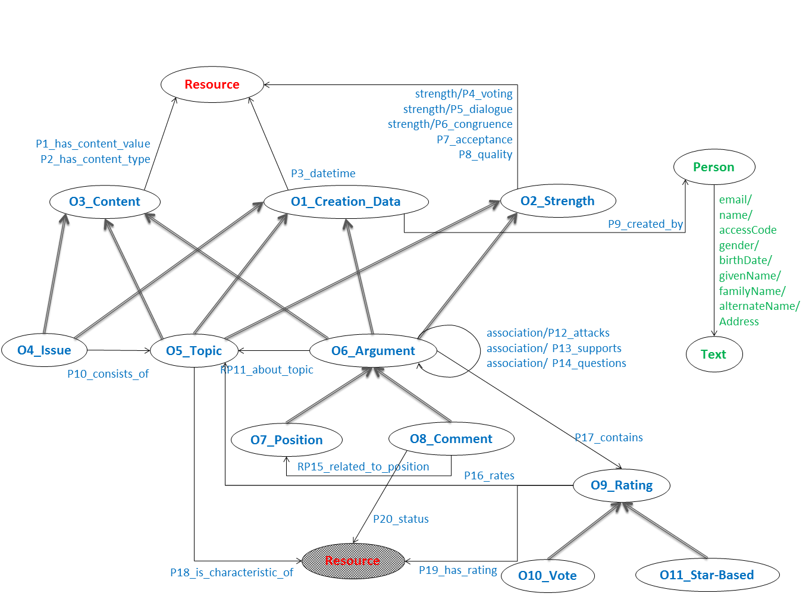

Features of Methinks
General Properties
Methinks is an online service developed using modern web technologies, intended to be licensed and delivered as Software as a Service (SaaS). The target market of Methinks includes, among others, hotels, online booksellers, listings directories (e.g., booking.com, ebay, etc.) and content aggregators.
Unlike generic commenting and debating tools such as Disqus 1 , the objectives of Methinks are very much market-related, namely to (a) assist the consumer towards more informed shopping decisions , and (b) help the analyst identify trends , as well as problematic or attractive characteristics of the offered products or services to improve their business. Each objective is achieved through a different frontend operating on the same backend 2 .
For the User Interface design of the final prototype, the user-centred design (UCD) process [9] was followed to ensure optimal usability of the end product. The process included the following phases: user requirement collection and analysis, creation of high-fidelity interface mock-up designs, expert walkthrough evaluation of the prototypes, adjustments based on expert evaluation results, user-based evaluation in a laboratory environment, and further adjustments of the prototype based on the results from the evaluation.
Features for the Consumer
Comments as first-class citizens
In Methinks, comments are organised in user-generated
topics
. For example, in the provided demo (referring to the hotel domain), different topics may include
restaurant
and
room
; however, the list of topics is open, to allow the comment writers to give emphasis on any aspect that they consider important (e.g.,
mosquitos
or
nightlife
).
One of the main ideas behind Methinks is that comments are treated as first-class citizens , carrying as much information as the actual description of a product or service. A button brings about a drawer showing the provided comments, with various options for searching, filtering, organising or viewing them (see Figure 1 ). The related retrieval functionalities are implemented using SPARQL queries posed against an RDF backend following an appropriate ontological schema.

More importantly, comments are integrated with the actual page content. Any textual content in the description of the product/service that corresponds to an existing topic of discussion appears underlined in an indication that there is further information linked to it. On mouse-over, a box appears above the underlined text showing the number of discussions that have been created on this particular topic (see Figure 2 ). Upon clicking inside the box, the main Methinks plug-in window ( Figure 1 ) expands and shows the discussions that are associated with the selected topic. Similarly, selecting some text in the description, allows one to search in the comments for this text, or create a new topic for this text.
Leveraging crowdsourcing and argumentation to understand comments
Whenever a consumer wants to add a comment to the system, this can appear as a new comment, or as a reaction to an existing one. In both cases, the comment writer needs to provide topics (existing or new ones), and may additionally provide various types of textual and/or structured feedback. The system provides help in selecting topics, by proposing existing topics that match what the user is writing.
Textual feedback is addressed to humans, whereas structured feedback (like votes, star ratings and characterizations of aspects as outdated or helpful) helps evaluating the comments and the product/service. In fact, users have various ways to criticise (or praise) various aspects of previously submitted comments or of the product/service under discussion, and this rich feedback is leveraged by complex argumentation-inspired algorithms, whose details can be found at [10] . These algorithms allow a fine-grained analysis of how positively or negatively the crowd views certain aspects associated with the product/service at hand, or the comment itself, by leveraging (among other things) the two types of relations among comments (attack/support) using methods from quantitative argumentation frameworks [3] , as well as by employing the categorization of feedback in different aspects and/or topics.
Comments are evaluated by assessing their quality and acceptance . The quality rating of a comment determines its reliability and usefulness for other consumers and helps in ranking the comments. The acceptance rating is used to determine whether other consumers agree with the comment’s assessment on the topic (positive or negative); this in turn determines the contribution of the comment in formulating the final score assigned to the topic. NLP technologies may help improve these algorithms in the future; yet, our goal on involving users in the loop aims at keeping them engaged in the reviewing process.
Features for the Analyst
With regards to the analyst, we have developed a rich graphical user interface (GUI) allowing monitoring trends and understanding the social feeling associated with products (see Figure 3 ). The analyst interface allows moderating (accepting/rejecting) comments, thereby allowing the analyst to block comments with offensive or profane language, and control what comments are published to the webpage. It also allows responding to comments, a feature that gains popularity in most review sites. More importantly, it provides various visualizations of the comments’/topics’ quantity and scores. All visualizations allow various types of organisation and filtering along various dimensions (temporal, topical, status etc), leveraging the flexibility of our semantic representation and facilitated by SPARQL expressiveness.

Used Technologies
The frontend was implemented as a web-page plugin using the AngularJS 3 framework. It was designed and developed with the following two principles in mind: easy web-page integration and minimum possible dependencies on external javascript and styling libraries.
The analyst interface was implemented as a single-page application in order to provide a user experience similar to that of a desktop application. It was developed on top of AngularJS framework, using Twitter Bootstrap 4 for the styling and positioning of the UI components. The various analytics graphs are created dynamically as SVG images with the help of the nvd3 5 and D3.js 6 libraries.
The backend uses Virtuoso Triplestore 7 version 7.2 to store all the created comments along with all the metadata (e.g., creation date, authors, comment relations etc.) that are necessary for supporting Methinks’ functionalities. The storage and data access layers are implemented using RDF and SPARQL, respectively.
Even though Methinks’ data could conceivably be stored also using relational technologies, the use of semantics allows future interoperability among different deployments of the Methinks platform and datasets from the Data Web, therefore allowing better integration and paving the road for future developments that could lead to a global repository of annotation-rich comments, where comments from different web sites and products/services could be combined with online data to provide a more complete user experience.
The ontology used for the representation of the comments transfers part of the business logic to the representation layer, for easier maintenance, and is shown in Figure 4 . The ontology design employed a functionality-oriented approach. In particular, the top-level concepts (O1_Creation_Data, O2_Strength, O3_Concept) were created with regards to the types of properties that different lower-level concepts should support. For example, the class O1_Strength is the domain of all properties associated with the notion of strength (acceptability, quality, etc.) and subsumes all concepts whose value (strength) is evaluated in the system (namely, topics and various types of arguments). The same idea is used for the other concepts. More details are omitted due to lack of space.
